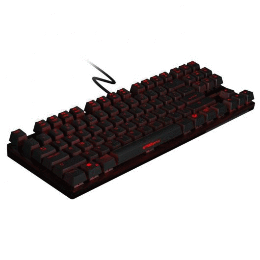
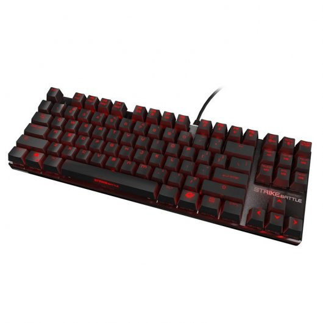
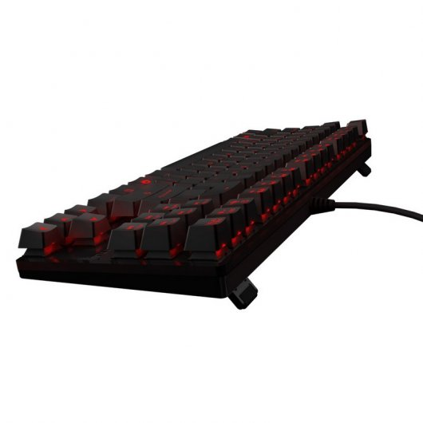
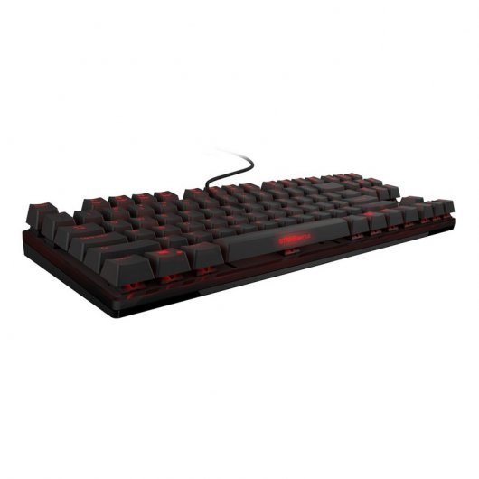
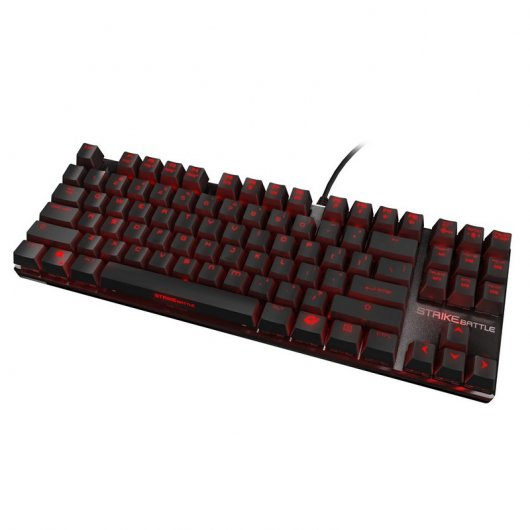
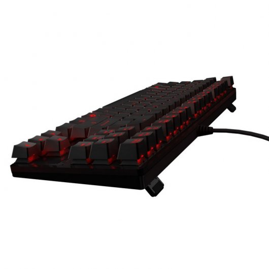
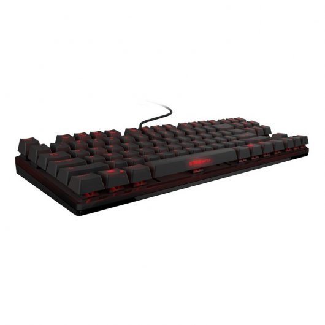

FUTURETECH STORE |

 





|
Ozone Strike Battle
86,99€
Strike Battle, sólido y compacto.!!!!
Te presentamos en PcComponentes el teclado Strike Battle. El Teclado Strike Battle posee la mejor selección de cherry mx switches , un menor tamaño y un diseño ergonómico que permite un uso muy confortable. Su capa de aluminio de alta calidad ofrece los mejores materiales, creando un producto con los mejores materiales y rendimiento para llevar tu técnica de juego a un nivel muy superior. El diseño minimalista unido con el estilo compacto lo convierte en un periférico ideal para el entorno competitivo, gamers que viajan con toda su equipación para jugar en torneos o cualquiera que necesite de un mayor tamaño en su espacio de trabajo. Take it to the battlefield.
Características
Fuerte y duradero El teclado strike batle ha sido fabricado con materiales hechos para durar y resistir duras sesiones de juego. Gracias a su carcasa de aluminio y sus 50 millones de pulsaciones de ciclo de vida, disfrutarás de un teclado altamente resistente y duradero, un arma creada para el combate.
Retroiluminación personalizable Strike Battle incluye teclas retroiluminadas en rojo, consiguiendo un ambiente de juego único para mejorar la experiencia de juego del usuario. Crea tu ambiente de juego personalizado con seis configuraciones de retroiluminación distintas: OFF / Breathing / 10% / 30% / 70% /100%
Teclado compacto El tamaño compacto del Strike Battle es perfecto para viajar y para obtener mayor espacio en tu espacio de trabajo y juego, ofreciendo una mayor comodidad.
30 Macros con 5 perfiles, 64 KB. Construido con cinco perfiles, la configuración de los distintos comandos para guardas distintas acciones que mejores nuestra técnica de juego ofrecen 30 macros programables. Estos perfiles también aseguran diferentes configuraciones dependiendo a qué estés tipo jugando: MOBA, FPS o MMO. La memoria interna de 64 Kb permite sistematizar las acciones para cada jugador específicamente , facilitando adaptarse a cualquier estilo en cualquier momento.
G-MODE La función GMODE te permitirá desactivar la tecla de Windows para no evitar las distracciones que siempre ocurren en el peor de los momentos. Gracias a esta función nunca existirá la posibilidad de perder una batalla decisiva en ningún momento.
Fácil acceso a las teclas multimedia. Ya sea audio, video puedes instantáneamente controlar el volumen, usar la opción mute y otras acciones multimedia. El rápido acceso permite un control absoluto de cualquier ajuste necesario durante la sesión de juego. Un nuevo nivel de funcionalidad.
Elige tu propio cherry. Personalización con un muy alto nivel. Elige el cherry que va más con tu estilo de juego desde los 4 modelos más populares del mercado, selecciona rojo, negro , azul y marrón. ¿Cuál es el mejor Cherry para un teclado mecánico? ¿Azul, rojo, marrón o negro? Realmente depende de cada jugador, de cada estilo de juego. Strike Battle está disponible en todos los switches para los gamers pro que estés buscando la velocidad y la precisión en su estilo de juego, una característica innata y que forma ya parte del alma de los teclados de Ozone Gaming. También puedes configurar la respuesta entre el teclado y el pc de 1ms a 16ms. Dicho esto, Strike Batlte es tu perfecto aliado, ajustado a lo que necesites, tu estilo, tu técnica en un diseño moderno y agresivo que harán las delicias de los más exigentes.
Especificaciones
Teclado: Strike Battle teclas 87 teclado mecánico
Longitud del cable: Cable trenzado de 1.5m
Voltaje 4.75V±10%
Nkey Rollover?Todas las teclas con Nkey Rollover (anti-ghost)
Compatible?IBM PC, Win8, Win7, WinNT, Win2003, Win XP or Win Vista
Pie?ABS+TPR
Conector: USB
Retroiluminación con LED roja , 6 opciones de retroiluminación: OFF / breathing / 10% / 30% / 70% / 100%
Tamaño: H: 34.59±1mm x L: 351.00±1 mm x W: 123.00±1mm
Superficie aluminio
Memoria?64KB de memoria interna
Gaming Mode:
Desactivación tecla de windows
“AWSD” & “teclas direccionales” función intercambiable
Macro Function a través del software
Peso: 685g
Teclas/ Cubierta inferior: ABS 94HB
Consumo eléctrico?≤ 250 mA
Modo trabajo?
Normal PC Modo
Gaming Modo
|


{kind=link}
{kind=link}
{kind=link}